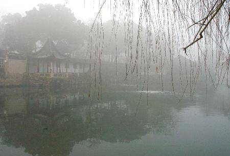

2006/10/2 12:05:33

《怨妇词》
故事非故事，怨妇非怨妇，几人能懂！
缠中说禅
一
秋露，秋露，秋去冬来难住。
星明星暗雾凝，三处四处鸟鸣。
鸣鸟，鸣鸟，闲愁万般不了。
《调笑令》
二
窗前月，独上柳梢头。
夜寂风来将起念，秋凉烬灭欲回眸。
门外响箜篓。
《梦江南》
三
风，弄影分香水榭东。
人闲在，露湿纸芙蓉。
《十六字令》
四
春风逐梦洗春城，翠染春江柳色青。
处处春花处处鸣。入春亭，梦里残阳雪后晴。
《忆王孙》
五
落红细说斜阳暮，碧波缱绻愁深诉。
云鬓为谁开，三春燕子来。
寄思青雪路，影乱辨前度。
心懒恨难回，寒炉玉镜台。
《菩萨蛮》
六
杏腮黄，孤枕恨，似把铅华闷损。
鸦送日，目伤怀，困眠丝雨来。
凋绿鬓，淡红粉，浴出千峰瘦尽。
花洒泪，乱琴台，见春不胜哀。
《更漏子》
七
断肠初，无际恨，唯叹与春不近。
残照里，暮云开，忽惊燕子回。
春坠泪，旧楼台，香鬓红颜暗损。
还似梦，滴空阶，宵深恨未裁。
《更漏子》
八
云荡空际霜影乱，更鼓风吹散。
灞桥一别柳千丝，滴绿摇青春似翠帘垂。
情酣幽梦飘几片，芳径横孤馆。
尘波细算去非迟，怎奈红愁莺泪妒娥眉。
《虞美人》
九
慵懒，为负春光，花开人醒晚。
片片吐枝头，尽化清商怨。
更恨东风吹难断，晓卷雨丝牵愁乱。
去梦何曾入霄汉，树树山山见。
《甘草子》
十
细理残妆不为春，初阳疏懒欲撩人。
万树红桃今又发，别离津。
漫把东风撕片片，半投流水半投云。
泪眼何堪偏再见，旧时痕。
《摊破浣溪纱》
十一
伫倚蓝桥，一湖相思水，叠浪纹波。
遥山云簇，春阳懒散如酡。
烟红影绿，俏双双，燕语莺歌。
朝晚尽，吟花笑柳，瑶衣玉眼穿梭。
十载忧迷痴怨，付寒年冷岁，不为情多。
人间问谁念我，惹泪成河。
流星带月，恨无涯，枉试飞柯。
凉雨泼，急风骤起，尘寰乱蚁惊蝌。
《汉宫春》
十二
愁萦丝，惜分时。
狂风凋尽百花枝，夜阑眉黛低。
今又鸦啼月，朦胧掠岸飞。
梅溪乡梦玲珑地，只是人未归。
《蝴蝶儿》
十三
灼灼花如故，弯环一水清。
淡云缥渺晚天晴，白鸟翩翩帘外自欢鸣
把酒无人伴，调弦泪早倾。
举眉何物不关情，风叶沙沙忽作老秋声。
《南歌子》
十四
风静月凝眉，星溅长河水，
梦锁高台恨已疲，夜白凋红翠。
碧海赴前盟，冷雾清如泪。
暂泊云沙问影梅，拂面空相对。
《卜算子》
十五
窗尘锁，竹影拂香闱。
月在碧天云散后，花飘深院梦回时。
白鸟度南池。
《梦江南》
十六
更漏滴，月倾霜。
高楼风弄笛，吹落小梅香。
风霜难落愁中白，曾倚朱栏千夜长。
《江南春》
十七
孤灯莫记当年事，高台霜暗星垂地。
杜宇声声寒，梦凋花影残。
纷纷丹桂子，飘落银河水。
人醉木兰船，风吹血满天。
《菩萨蛮》
十八
燕斜穿，杏花梢。
红楼风日晚吹萧，酒消情未消。
眉乱青山瘦，春愁带雨飘。
相思难补肠中裂，化作蓝火烧。
《蝴蝶儿》
十九
不倚西楼残月，愁绝，更怕五更风。
隔窗摇梦搅魂寒，孤枕总难眠，
恨杀邻鸡催晓，烦扰，呆坐日三竿。
两行清泪透单衫，滴滴自心尖。
《荷叶杯》
二十
倦柳牵愁，空波流恨，晚来闷雨蒸丝。
云端沙际，邈缈燕双归。
岸草微红暗杂，风飘絮，摺水纹衣。
粘花气，寻香惟见，点点乱深泥。
相思，
肠数裂，春残又是，昔日今时。
叹寒魂独影，骨冷心凄。
画阁高楼难倚，银钗坠，断梦长堤
何处问，年年开谢，端的为缘谁。
《满庭芳》
二十一
云缝雾织，月坠星河失。
向晓东风更无力，不送杏花消息。
梦阑一枕青霜，寒炉半缕残香。
忽记兰舟系处，乱红正满池塘。
《清平乐》
二十二
兰舟载影，弦月云边淡。
漾水寒星三四点。
不似离人泪滴，犹把风魂默然减。
已无感。
何人自凄黯。
飞霜笛，袭肝胆。
怕心儿又被相思占。
转棹惊回，乱荷花舞，乍见芙蓉皱脸。
《淡黄柳》
二十三
情如流水匆匆去，月透高枝，
露冷单衣，空絮庭前逐梦飞。
飘飘何处清商送，蝶舞风丝，
人落相思，却又青溪照影时。
《采桑子》
二十四
东风皱，
眉山瘦，
落红争把春心锈。
罗衣薄，
青垂幕，
何堪朝雨，对窗犹昨。
落，落，落。
难回首，
江亭柳，
冷绵吹雪新成旧。
廊桥约，
焚幽阁，
梦灰飞影，万千柔弱。
缚，缚，缚。
《钗头凤》
二十五
不堪愁，镜中眉。
难舒心裂酒阑时，恨如紫燕飞。
花曳知渐近，笙寒馆梦回。
相思占得琼苞碎，碧海无尽期。
《蝴蝶儿》
二十六
半篙溪水碧纤纤，瑶池酿锦岚，
天风吹去雨巫岩，烧痕青又添。
熬此恨，捣心浆，人痴酒不酣。
云山晚绿透重帘，玉颜衰岂堪。
《阮郎归》
二十七
窗锁梨花碎影，烟结梅庵幻境。
残烛对无眠，最是柔情惹病。
幽冷，幽冷，长梦难消夜永。
《如梦令》
二十八
未倚朱栏泪已昏，凉烟绕阁更消魂。
醒来犹是梦中身，假还真。
无语忍听风削影，举头怕见月撩人。
一片痴心何处去，纵如尘。
《摊破浣溪纱》
二十九
一入红尘愁自满，病眼衰容，怕被鸳鸯见。
待得残霞天外断，蟾光又照深深院。
空对金樽情更乱，烛影摇魂，炉上青烟软。
今夕无风过阆苑，游丝寸寸谁人剪。
《蝶恋花》
三十
云凝颜，月流辉。
魂牵湘馆闭珠扉，碧苔人未归。
花落铅华缺，情如急雨催。
寒林烟淡无人地，月破湖上堆。
《蝴蝶儿》
三十一
淫雨乱风魂，最是恼人天气。
满院浅红深绿，把空樽痴对。
芳心一寸老枝头，芙蓉为春死。
来日无寻踪迹，见杨花新坠。
《好事近》
三十二
乱絮高低一水凉，云侵日蚀旧池塘。
春魂早在花前落，夕雨朝风何太狂。
《采莲子》
三十三
蛙鼓敲寒，微光偶刮三更露。
影荷烟树，满眼相思绪。
梦醉方知，此恨逃无处。
魂疑去，逐霞追雾，又化春秋雨。
《点绛唇》
三十四
醉老红尘非为酒，莫道黄花瘦。
冷雾入清秋，独倚蓝桥，满目波如旧。
渡头白寥风中皱，零落谁先后。
逐水更沉泥，杂骨和灰，与尔同昏昼。
《醉花阴》
三十五
红叶晓飞深院，碧云暮绕空檐。
残诗无雁寄江南，长醉鹅黄老酒。
莫笑情狂痴重，应怜露冷霜严。
晚来最怕月钩纤，直教骨魂穿透。
《西江月》
三十六
几番寒雨老秋心，且醉莫孤吟。
风来冷菊纷散，三四片，落虞琴。
愁未剪，梦难寻，酒犹斟。
玉颜谁惜，碧水空波，绿发无簪。
《诉衷情》
三十七
云萍漂泊，情思落寞，强乐难留滋味。
玉炉烟冷更伤魂，日月缚，眉凋眼坠。
冰弦怨拔，云环怒断，焚却锦罗双字。
银簪刺肉若浑无，泪血结，魂熔心死。
《鹊桥仙》
三十八
楼衔半月秋塘乱，旧檐空双燕。
夜阑风倦独无眠，往事随云远。
宵凉若水，雾迷似幻，怎如郎情薄。
天倾急雨落无由，寸寸相思断。
《贺圣朝》
三十九
瑶琴轻弄，引清风窥户，朱帘微动
秉烛临窗，细月疏星锁天洞。
摇曳梧桐碎影，池水静，暗香遥送。
独自醉，半卷罗帏，枕侧被斜拥。
无梦，二更冻。
往事袭魂惊，旧愁新痛，孽情难控。
幻困红尘死生桶。
破镜谁堪相对，孤客倦，寄何方冢。
又向晓，河汉坠，万声悲恸。
《暗香》
四十
正新秋疏雨滴黄昏，一叶坠高桐。
傍雕栏极望，西山流彩，北雁横空。
亥字高低渐淡，飘去了无踪。
白雾生天际，满目迷朦。
最是消魂此刻，莫记红尘事，怕惹情浓。
转把朱帘落，脉脉点香松。
紫烟盘，摇光荡影，恍梦浮，乱景撞双瞳。
惊遮首，赫然又见，附骨尸虫。
《八声甘州》
四十一
愁心终日对鹅黄，晚起厌梳妆。
忽见圆中新菊，惊知又近重阳。
千秋同醉，红颜惹恨，绿发招霜。
纵捣跳丸飞矢，多情犹自凄凉。
《朝中措》
四十二
袅袅烟生，盈盈水动，骊歌昔年曾唱。
商风今唤起，送千里，引蟾光漾。
船头岸上，笼雪帛银纱，迷离万象。
如思绪，个中消息，不留人赏。
怅惘。
天地熬愁，万古何堪灭，为情难放。
醉醒同困旅，叹回首，梦元空酿。
星河失桨，举目尽无梁，唯听波涨。
悲来往，别时摇泪，一般模样。
《翠楼吟》
四十三
西风碎剪，乱叶如愁飘万点。
白雾寒沙，月出惊飞千树鸦。
断魂凄雨，似去还回侵梦旅。
珠泪无由，逐浪追波几度秋。
《减字木兰花》
四十四
一帘春梦，暗锁杏花屋。
好月喜临窗，照娥眉、唇红发绿。
晓来酥雨，点点入情浓。
瑶池沐，青浮玉，浅笑倾仙族。
魂惊幻破，犹对风前烛。
孤影杂凉烟，渗墙衣、心肝恍触。
捶头抓臂，嘶叫竟无声。
行尸肉，终谁属，生死乾坤狱。
《蓦山溪》
四十五
相逢千次，尽愁怀熬梦。
早识情痴本天种。
孽缘缠，苦困前世今生。
谁解得，纵裂残躯盍用。
对长空掷泪，呆立危崖，
乱野茫茫入苍瓮。
薄命岂红颜，碧落黄泉，
魂途漫、无身堪共。
更何往、尘寰影飘摇，
乍怒起西风，夕阳如冻。
《洞仙曲》
四十六
寒墙冷院，露叶霜花，重帘不抵风虐。
云合深秋天气，朝昏垂幕。
时来断魂凄雨，夜满窗，影翻声错。
捣梦苦，起披衣，对镜芙蓉泪烁。
不了情归碧落。
惟剩壳，今生再无悲乐。
忽拔金刀，万缕青丝恨削。
天河月摇星颤，暗雷飞，漫倾冰雹。
顿转寂，结此际，心恍未觉。
《声声慢》
四十七
削尽相思发。
散丝丝、牵魂乱魄，情心寸割。
总是人痴因梦老，昔对长河浪阔。
鹊桥陷，尘根难拨。
辗转千身犹未悔，去纷纷、多少云山别，
青竹泪，化为蝶。
今宵更把瑶琴裂。
掷清商、天帷乍动，荡星摇月。
银汉堤崩倾怨雨，欲把乾坤浸没。
已无语、游思空叠。
一院秃枝风前响，正沙沙、恍又梧桐叶。
重满树、鸟音悦。
《金缕曲》
四十八
中庭白，又是月圆今夕。
微云淡、河汉横空，浅水西流浪无迹。
梧桐枝露滴，轻湿，苍苔老石。
楼阴驳、拂影枯池，败菊残荷暗堆积。
丝丝恨千尺。
系别梦蓝桥，逝者难执。
痴情万缕终何得。
尽几许霜染，百回风乱，终来一一为谁白。
可怜世间客。
幽寂。倚阶立。
忽狂笑抓土，十指成赤。
满头青发埋亭北。
渐双泪盈面，目迷心息。
茫然近晓，向天际，雾冷织。
《兰陵王》
四十九
黄泉路拥，何处托行尸。
双锦字，焚作泪，
百千丝，葬沉泥，落魄成新鬼。
情如水，收无计，
生若死，醒犹醉，觉还疑。
熬梦酿愁，辛苦咸酸味，几许人知。
埋长亭别恨，挂老树相思。
究竟缘谁，尽心痴。
入红尘戏。
惊天地，鹏展翅。
挟风雷，存永罪，终不悔。
振罗衣，立云霓，抖擞凌霄志。
银河坠，缺星堤，弯日轨，
旋经纬，乾坤回。
混浊同污，纳纳穹苍气，
激荡崔嵬，送鲸涛翻海。
掷酒一高歌，万古同杯。
《六州歌头》
五十
初归旧檐燕子，唤新晴晓顾。
薄光曳、刮影流烟，点点凝作清露。
鹅黄嫩、琼枝绽翠，微馨暗逐风弦舞。
幻紫飘红漾，迷离恍听私语。
断发牵萦，卅载蝶梦，乱车尘起处。
怡春院、笑脸迎欢，惯看闲男怨女。
怕朝昏、雕栏独倚，总无泪，枯魂空与。
玉炉冷，半卷朱帘，乍来轻雾。
蓝桥波老，别岸船横，远山浅雪著。
更满目、夭桃灼灼，撩色弄彩，
杂气分香，似他年聚。
斜阳将息，孤帆渐入，茫然怅望何依托，
忽惊觉，四碧弥飞羽。
黄云几朵，旋成万马奔雷，赤掩漫天沙土。
春寒挂月，酒暖长宵，奈四更添雨。
一滴滴、西窗难伫。
秉烛临屏，芳雪纹青，醉梅横素。
依稀可触，芙蓉心事，瑶琴留石音杳渺。
仿重闻，往昔相思句。
东隅幽白潜回，急理残妆，客官唤取。
《丰乐楼》